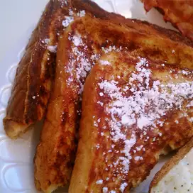

French Toast

Thick slices of sweet bread are the perfect base for French toast.
Ingredients:
- 4 (1 inch thick) slices King's Hawaiian® Sweet Bread
- 4 large eggs large eggs
- 1/2 cup milk
- 1/2 teaspoon vanilla
- 1/4 teaspoon ground cinnamon
- 2 tablespoons Butter or oil for frying
- 2 tablespoons Maple syrup
Steps:
1. Slice bread crosswise so that each slice is about 1-inch thick. Cut larger slices into halves or thirds, if desired. Set aside.
2. In a shallow mixing bowl, whisk together the eggs, milk, vanilla and cinnamon.
3. Quickly dip slices (do not soak) in egg mixture and cook until golden brown on both sides.
Keep egg mixture stirred and spices well blended.
Sprinkle with powdered sugar and serve with warm maple syrup.